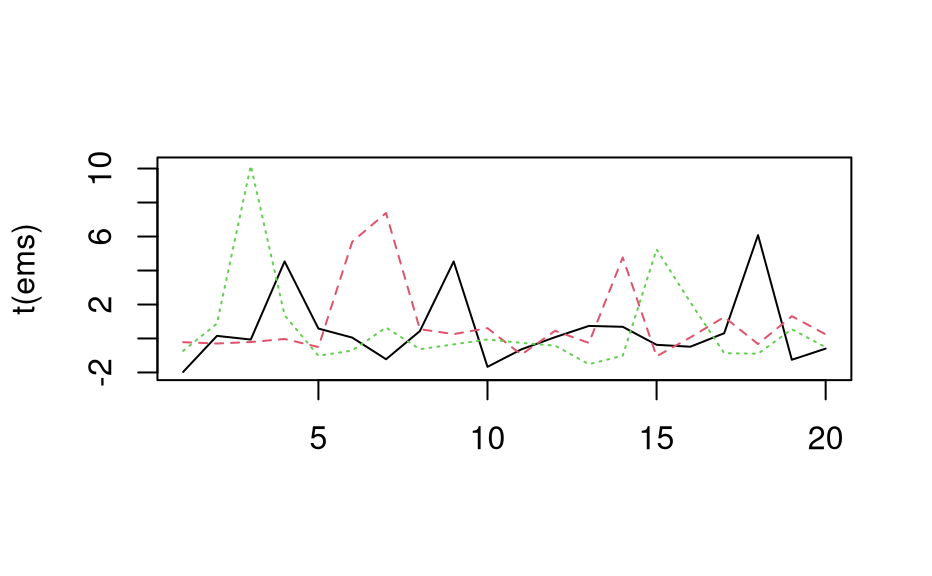

R/nfindr.R, R/nfindr.default.R, R/nfindr.formula.R
nfindr.RdAll the N-FINDR techniques are based on the fact that, in N spectral dimensions, the N-volume contained by a simplex formed of the purest pixels is larger than any other volume formed from any other combination of pixels.
Data to unmix (spectra in rows). It will be converted to a matrix using as.matrix. The matrix should contain a spectrum per row. It is recommended to reduce the dimensionality of the data to `p-1` before using this function. This can be done using PCA or other dimensionality reduction techniques. Withouth dimensionality reduction, the results might be inefficient and computation intensive.
Parameters to be passed to nfindr.default
Number of endmembers.
Initialization strategy.
vector of `p` integers - manually selected initial points, can be output of previous another endmember extraction method, e.g. VCA
random - randomly selected points
projections - selecting the two extreme points of the projections of the data onto random vectors
coordinates - selecting the two extreme points of the projections of the data onto the coordinate axes
Default: "projections" is used.
The iteration strategy. Options: "points", "endmembers", "both". By default, "points" are used.
Volume change estimator
volume - straight forward volume calculation without any optimization
height - Use the fact that the simplex volume is proportional to the product of `height` and `base volume`.
Cramer - Using Cramer's rule
LDU - Using LDU matrix decomposition
cofactor - Using the cofactor expansion for calculating `det(E)`
Default: Cramer's rules is used since it has best performance.
Maximum number of iterations to make.
Number of initializations to try. The final result will be the best output of all initializations. Ignored if specific initial endmember indices provided. Default: 1.
A formula object without a response term
A data frame containing the variables in the model
A list which contains:
indices: the indices of the spectra which increased the simplex volume the most. These are the indices of the endmembers.
iterations_count: if debug level higher than 0, number of loop iterations.
replacements_count: if debug level higher than 0, number of actual replacements during iterations.
replacements: if debug level higher than 1, the vectors of indices at all replacement steps. If fact, is used to see how the simplex was growing.
endmembers to extract the endmembers; abundances
to determine abundances of endmembers in each sample
data("demo_data")
# Reduce data dimensionality with PCA
pca <- prcomp(demo_data)
x <- pca$x[,1:2]
# Perform N-FINDR in reduced space
nf <- nfindr(x, p = 3)
# Get endmembers both in reduced and original space
ems <- endmembers(nf, demo_data)
ems_pca <- endmembers(nf, x)
# Plot endmembers
matplot(t(ems), type = "l")
